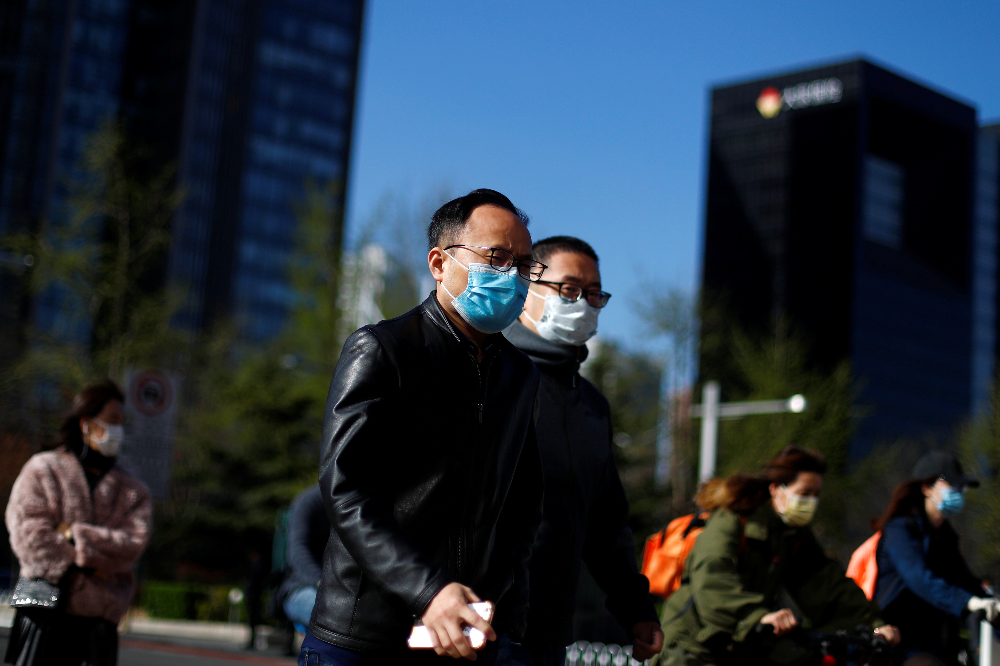
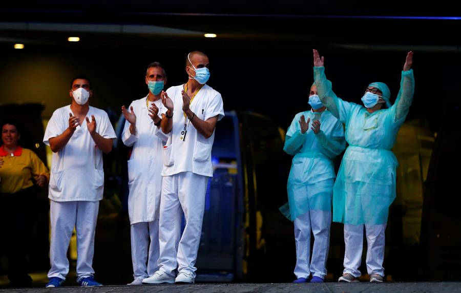

Covid-19 - Boas notícias
Número de curados no mundo ultrapassa 400 mil pessoas
Fonte: CNNbrasil.com.br
A universidade americana Johns Hopkins informou, na noite de sábado (11), que o mundo ultrapassou a marca de 400 mil pessoas curadas do novo coronavírus (COVID-19). A instituição americana disponibiliza um painel que atualiza em tempo real as estatísticas da pandemia, com números diferentes dos divulgados em boletins da Organização Mundial da Saúde (OMS).
Itália tem maior número de curados de Covid-19 em 24h
Fonte: Época Negócios
Itália tem 42.727 pessoas curadas do novo coronavírus (Sars-CoV-2). O número voltou a subir na última sexta-feira e atingiu o mais alto número desde o início da pandemia. De acordo com a Defesa Civil, foram 2.563 recuperações nas últimas 24 horas.
idoso de 99 anos é curado da Covid-19 no Brasil
Fonte: g1.globo.com
Ermando Armelindo Piveta, de 99 anos, se tornou a pessoa mais velha a se recuperar da Covid-19 no Brasil. Ele estava internado no Hospital das Forças Armadas; O idoso foi segundo tenente e chegou a atuar na 2ª Guerra Mundial.
Brasil tem 14 mil pacientes recuperados da covid-19
Fonte: Exame
Pela primeira vez, o Ministério da Saúde divulgou o número de pacientes recuperados do novo coronavírus no Brasil. Até esta terça-feira, 14, são 14.026 pessoas que já passaram pela infecção, o que representa 55% de todos os casos confirmados no país.
$MCTIC anuncia testes com remédio contra o coronavírus

Fonte: MCTIC.gov.br
O Ministro da Ciência,Tecnologia , Inovações e Comunicações, Marcos Pontes, anunciou que um remédio promissor contra a Covid-19 começará a ser testado em 500 pacientes nas próximas semanas. A partir de testes in vitro o medicamento reduziu em 94% a carga viral em células infectadas pelo novo coronavírus. A estimativa é de que os resultados dos estudos clínicos em pacientes sejam concluídos até a metade do mês de maio.
Vacina contra o coronavírus: Estudos em andamento
Fonte: UOL
Cientistas estão usando tecnologias avançadas para criar diferentes tipos de vacinas contra a Covid-19. Embora as técnicas sejam promissoras, as expectativas é que as vacinas demorem de 12 a 18 meses antes de serem disponibilizadas ao público. Entenda mais sobre a tentativa feita pelios cientistas para combater o #coronavírus.